Skills · fixed header
Live 375 × 667 capture after scrolling: title, close and War Bank stay visible; unavailable skills remain readable.

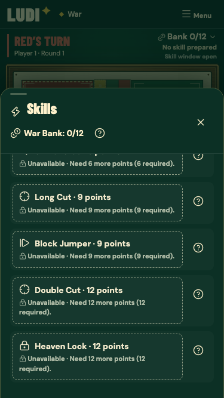
Portrait first. The wooden board stays at the centre of Heritage and War. Interface icons now use Lucide.
Play the live app · Release verification · Implementation and verification notes · Viewport measurements · Lucide icon addendum
Live 375 × 667 capture after scrolling: title, close and War Bank stay visible; unavailable skills remain readable.

Fresh Chrome capture: the reference’s hierarchy with LUDI’s actual wooden board and visual identity.
Same board-first hierarchy; simpler controls and no War placeholders.
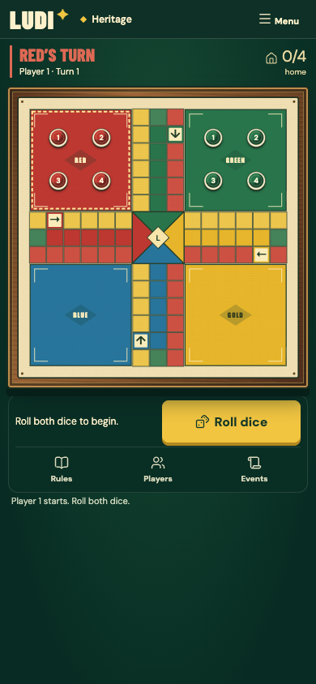
390 × 844 · 96% width wooden board; prepare and roll actions.
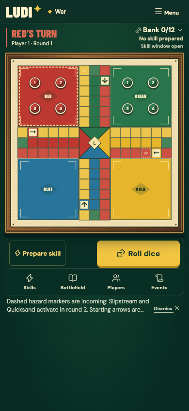
375 × 667 · genuine dice result and legal-move access; no page scroll.
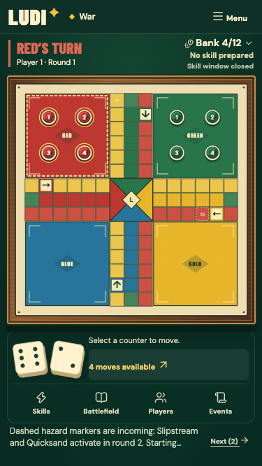
390 × 844 · same board-first treatment, with simpler controls.
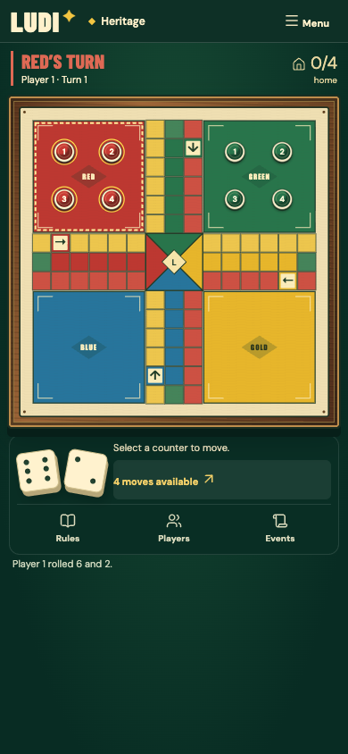
Confirm a purchase explicitly; keep the prepared slot and original prices.
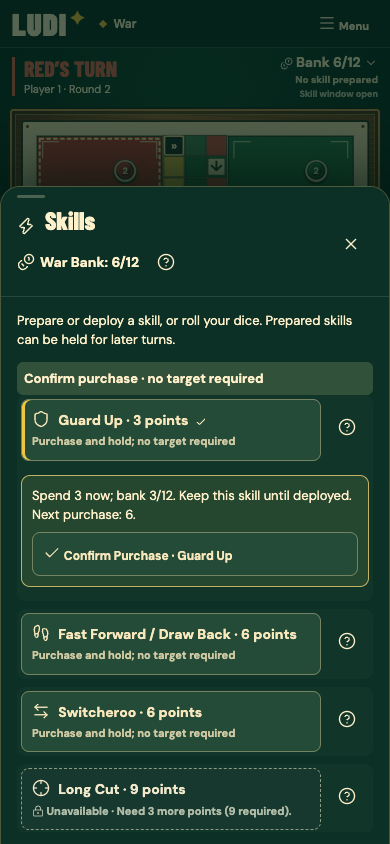
An actual local game: select on the board, rotate the phone and confirm.
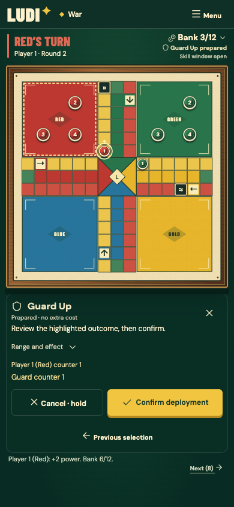
Isolated interaction fixture: legal target, preview and explicit confirmation.
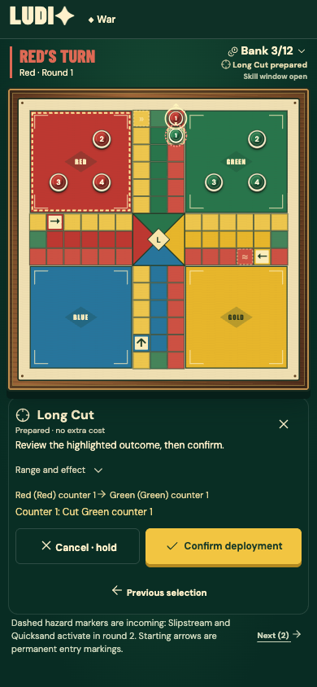
Player progress, bank, prepared skill and active effects.
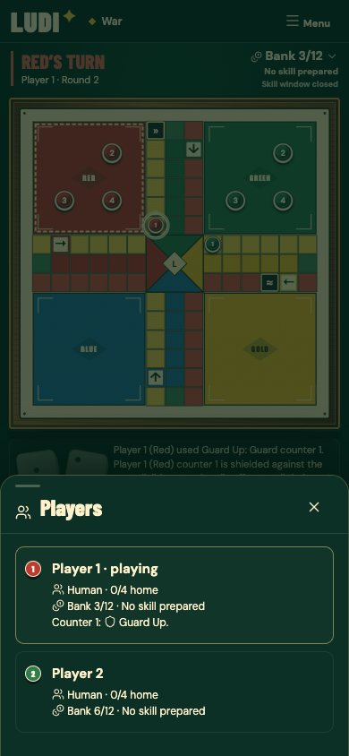
The existing hazard key and active/incoming information.
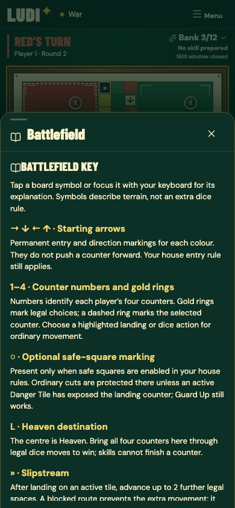
The existing queue retains significant messages and full history.
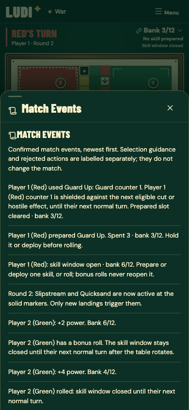
844 × 390 · compact status and controls beside the board.
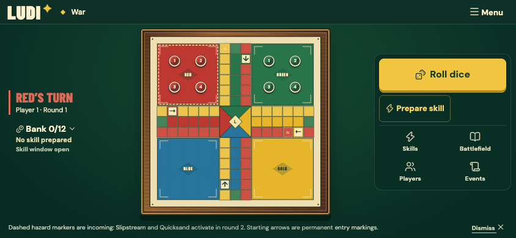
667 × 375 · limited height remains usable.
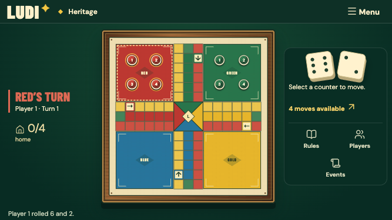
1440 × 1000 · original console and board composition retained.
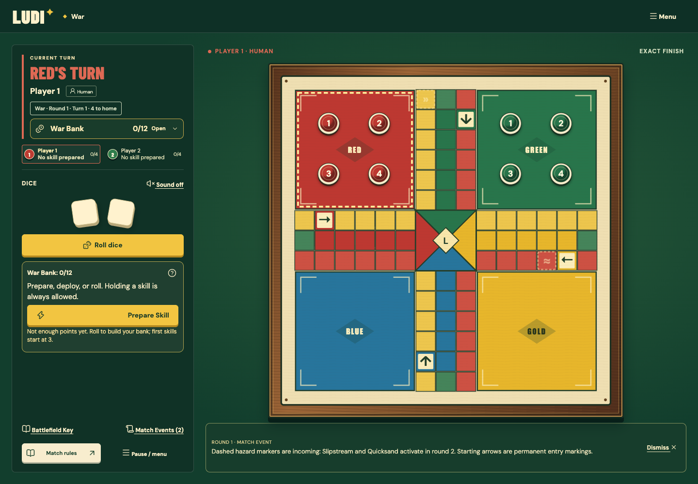
1440 × 1000 · original desktop composition retained.
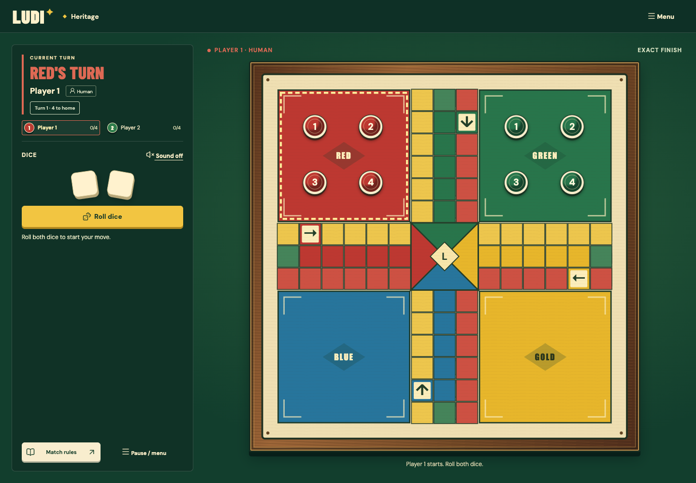
Baseline 390 × 844: 329 px board versus 374 px in Build 004A.
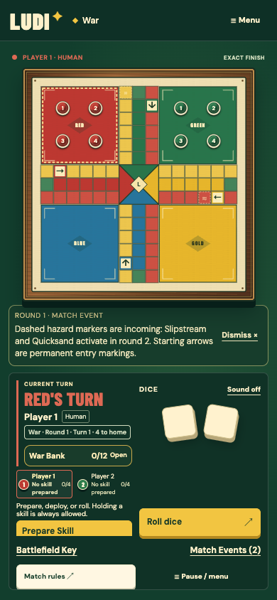